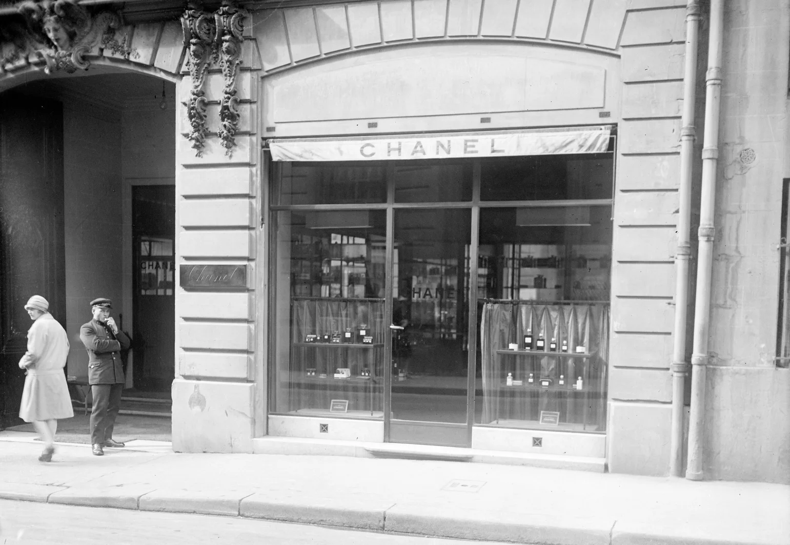

Coco, como se hacía llamar, abre una sombrerería en el número 21 de la rue Cambon, llamada Chanel Modes. Las célebres actrices francesas de la época lucieron sus sombreros, y le ayudaron a construir su reputación.
Gabrielle Chanel abre su primera Boutique en Deauville. A partir de 1913, comienza a vender una línea de ropa deportiva de punto, material que hasta entonces se había utilizado para fabricar ropa interior masculina. Este enfoque revolucionó la moda y la relación de las mujeres con su cuerpo. El éxito fue inmediato.
Alentada por su éxito, Mademoiselle Chanel abre su primera Maison de Couture en Biarritz, Francia, donde emplea a 300 trabajadores y diseña su primera colección de Alta Costura.
Dar un servicio profesional con calor humano y el mejor trato, buscando transmitir la mejor imagen de nuestros clientes a través de nuestros productos y asesoría, haciéndolos sentirse cómodos y elegantes en cualquier evento.
Ejercer un liderazgo, tanto local como nacional, con base en nuestros valores de empresa, que son, respeto, apoyo y confianza, a través de un producto de calidad insuperable, y de la constante capacitación de nuestros colaboradores superando las expectativas de imagen y buen vestir de nuestros clientes, y lograr con esto la mayor rentabilidad
El objetivo de Chanel como casa de moda es ofrecer productos de alta calidad que reflejen elegancia, innovación y estilo atemporal, satisfaciendo las necesidades y deseos de sus clientes. La marca busca mantener la excelencia artesanal, liderar en la industria de la moda, celebrar la feminidad y el empoderamiento, y preservar el legado de su fundadora, Coco Chanel.